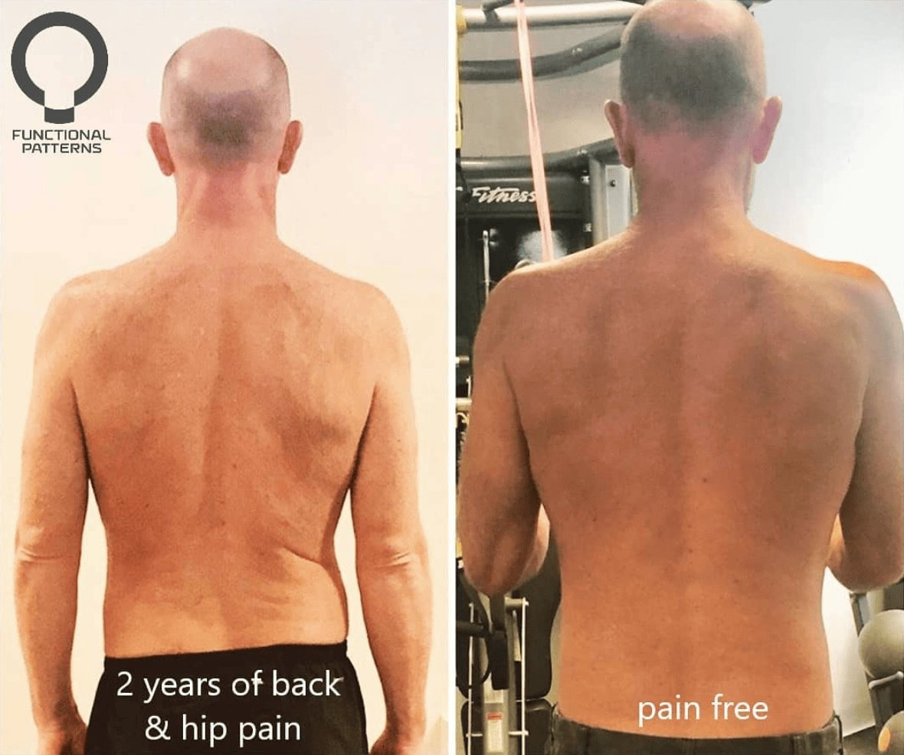

If you've been searching for physio for scoliosis in Brisbane, you're likely looking for answers beyond just stretches and basic posture tips. At Functional Patterns Brisbane, we specialise in helping people with scoliosis regain control over their bodies using movement systems designed to align with how the human body evolved to move — standing, walking, running, and throwing.
We don’t just treat symptoms. We rebuild the system.
Understanding Scoliosis
Scoliosis is a condition where there's a side-to-side curvature of the spine, often shaped like an "S" or "C". In more severe cases, the rib cage may also rotate, affecting breathing and posture. Scoliosis may be congenital, idiopathic, or caused by other structural imbalances.
There are different types of scoliosis, ranging from mild scoliosis that may go unnoticed to moderate scoliosis and severe cases that can lead to pain, postural collapse, and reduced range of motion.
Can Scoliosis Be Corrected?
A common question we hear is: Can scoliosis be corrected? The short answer: it depends on your approach.
Many scoliosis treatment options focus on isolated scoliosis exercises, spinal bracing, or even spinal fusion in extreme cases. But those methods often focus on symptoms, not causes. They don't ask why your spine curved in the first place — what imbalances in your gait, breathing, or movement patterns led to the spinal curve?
At Functional Patterns Brisbane, we take a different route. We identify the movement dysfunctions that feed into scoliosis, and then we work to unwind them through full-body, integrative training — not just Schroth exercises or static stretching.

Why Physical Therapy Alone Isn’t Enough
Typical physical therapy often focuses on isolated muscle groups or basic scoliosis exercises to straighten the spine. But scoliosis isn't just about one tight or weak muscle. It's about how your body moves as a whole.
You might learn a few stretches or strengthening drills, but if your gait, breathing mechanics, or rib positioning aren’t addressed, the curve remains. This is why so many treatment options fall short.
We aim to go deeper.
“In the beginning the pain was unbearable in my upper right thoracic and right scapular which would leave me unmotivated and fatigued 24/7.
Nowadays this region is feeling pain free, occasionally I will experience some discomfort in the area and I will have to release the muscles around this point with a lacrosse ball but then it subsides and is fine. Apart from this slight discomfort, I experience no pain...”
— Kynan, Pictured

The Functional Patterns Approach to Scoliosis
Instead of asking how to stretch or "correct" a curve, we ask: How can we optimize movement so that the spine has no reason to twist in the first place?
We look at the full body — how your arms swing, how your foot lands, how your pelvis rotates, how your ribs expand, and how your spinal curve shifts during the gait cycle. Then, we rewire these movement patterns through targeted, evidence-based strategies that reduce the stressors causing postural collapse.
This is not a generic gym program. And it’s not traditional scoliosis treatment either.
We use video analysis, gait assessment, and a movement-first model to create a program that’s unique to you.

What to Expect in a Functional Patterns Scoliosis Program
-
Initial Movement Assessment
-
We’ll analyse how your body compensates during standing, walking, and breathing.
-
Corrective Strategy
-
You’ll learn how to integrate new patterns, not isolate old ones. Think reprogramming, not just strengthening.
-
Long-Term Improvements
-
Our goal is to improve your posture, reduce tension, and create long-term stability. We don’t do band-aid fixes.
Why Choose Functional Patterns Brisbane?
If you’ve tried physical therapists, surgical treatments, or have been told to just "monitor the curve," you’re not alone. We work with clients who’ve seen little progress with conventional methods. Our approach is different — and that’s what makes it effective.
We’re not chasing short-term changes. We’re rebuilding the foundation of your movement for real, sustainable results.
Real Change Is Possible
Whether you’ve been diagnosed with mild scoliosis, are dealing with chronic tension through the rib cage, or have been told surgery is your only hope — don’t give up.
You can move better. You can feel better. You can improve posture and reduce pain without relying on traditional scoliosis exercises or invasive treatments.
We offer a better way forward. And we’re here in Brisbane, ready to help.

Free 2-Page Guide
The 5 Things Physios Miss — and The 5 Things You Actually Need to Fix Pain
Tried everything, but your pain keeps coming back?
This free guide reveals why most physio and rehab methods fail to create lasting results — and what’s really behind recurring pain. You’ll learn what traditional approaches often overlook, and the key movement principles that actually rebuild function, improve posture, and help you move pain-free long term.